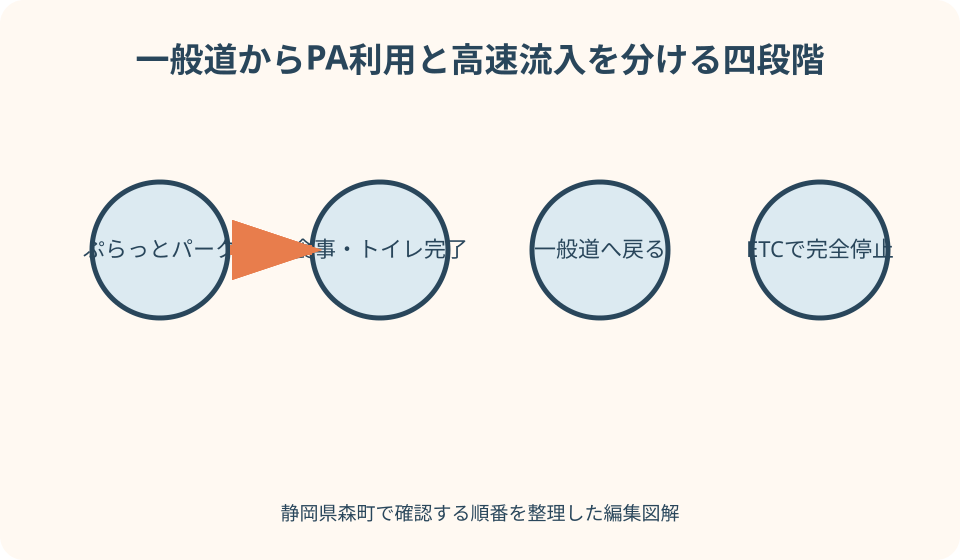
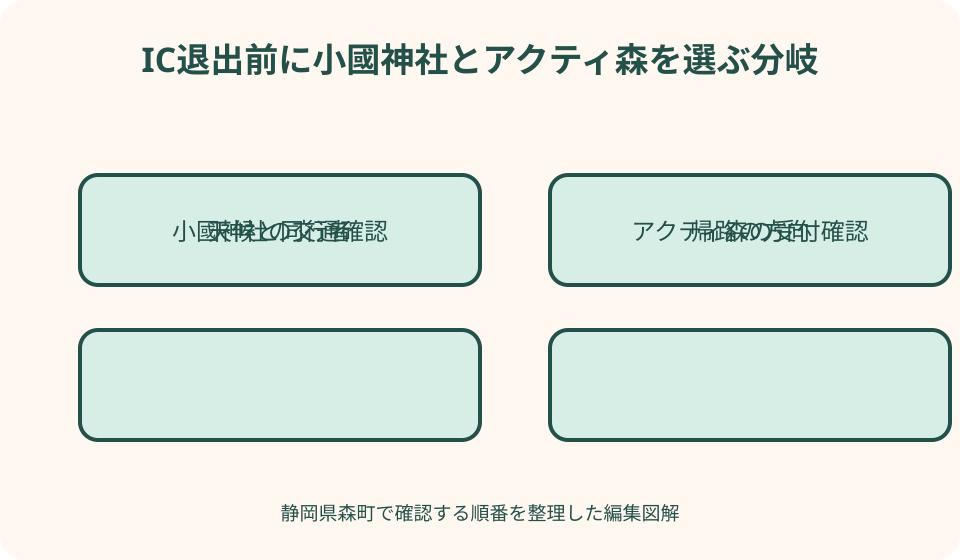

高速道路・IC・町内アクセス｜最終確認 2026-08-10
静岡県森町・遠州森町スマートIC利用法｜ETC・一旦停止・PAを先に使う順番
遠州森町スマートICは、遠州森町PAに接続したETC専用の出入口です。上下線の全方向に使える一方、ゲートでは必ず一旦停止が必要で、車長条件があります。さらに、町公式はスマートICから高速へ入った後にPA施設を利用できないと明記しています。PAで食事や買い物をしてから乗りたい人は、ぷらっとパークを先に使うという順番まで決めておく必要があります。

編集イラスト利用できる車かを入口へ着く前に判定する
遠州森町スマートICはETC専用です。森町公式は、ETC車載器を搭載し、ETCカードを使える車を対象として案内しています。料金所に係員がいる一般レーンを選ぶ感覚では使えません。出発前にカードの有効期限、挿入方向、車載器の音声または表示を確認します。
町公式は対象を車長12メートル以下としています。乗用車なら何も考えなくてよいという話ではなく、トレーラー、キャンピングカー、積載物を含む長い車両、業務車両は全長を確認します。不明なまま入口まで進まず、車検証や車両資料と道路会社の最新案内を照合します。
レンタカーや家族の車を借りる場合、車載器が付いていることとカードが入っていることは別です。カードの名義や利用可否、車載器のセットアップ状態を貸主やレンタカー会社へ確認します。カードを持っていても車載器がなければ、スマートICの利用条件を満たしません。
けん引中や屋根・後部へ大きな荷物を載せた車は、普段の乗用車と同じ感覚で判断しません。町公式の車長条件だけでなく、車両区分や積載状態が通行条件と料金へどう反映されるかをNEXCO中日本へ確認します。入口で係員へ相談する前提を置けないため、特殊な状態ほど事前確認が必要です。
確認日現在、森町公式は24時間、東京方面と名古屋方面の全方向に利用できると案内しています。ただし、災害、工事、事故、点検で通行条件が変わる場合があります。夜間に使えるという固定記憶だけで出発せず、NEXCO中日本の交通情報と現地表示を見ます。
ゲートでは一般のETCレーンと同じ動きをしない
スマートICの開閉バーは、車が停止した状態でなければ開かない方式です。森町公式も、ゲートの前で必ず一旦停止し、バーが開いてから通行するよう案内しています。後続車を意識して減速だけで抜けようとせず、停止線または案内位置で車輪を止めます。
停止する前に、車載器の音声を聞き取れるよう車内の会話や音楽を下げます。エラーが出たときに同乗者がカードを抜き差しするのではなく、車を停止させたまま案内表示を確認します。慌ててバーへ近づき過ぎると、表示や退避経路を見にくくします。
町公式は、ETC非搭載車が誤って進入した場合でも、バックせず戻れる構造と案内しています。利用できないと分かったときは、後退や転回を自己判断せず、現地の退出案内に従います。高速道路の入口付近で逆向きに動くことは、後続車が想定しにくい危険な行動です。
ゲートを通過したら、すぐに加速だけへ意識を移さず、合流方向と標識を確認します。前車が停止している可能性もあります。カードの反応が正常でも、東京方面と名古屋方面の選択が正しいか、合流車線の長さと本線車両を見て、安全な速度で進みます。
東京方面と名古屋方面を地名ではなく次の区間で選ぶ
東へ向かう東京方面が上り、西へ向かう名古屋方面が下りです。「上京するから上り」「帰宅だから下り」といった個人の予定では決まりません。ナビの目的地、次に通るIC、道路標識を三点で照合し、ゲート直前に同乗者へ向きを尋ねる状況を避けます。
東京方面へ流入した後の休憩候補として、NEXCO中日本の上りページは掛川PAを東側に案内しています。名古屋方面では、下りページがNEOPASA浜松を西側に案内しています。現在の施設間距離や営業は最新画面で確かめ、流入後の最初の休憩先を先に決めます。
森町から県内東部や首都圏へ行く車と、浜松や愛知方面へ行く車が同じ入口周辺へ集まります。前車について行けば同じ方向とは限りません。入口案内で自分の進行方向を読み、同乗者もナビ画面を確認し、分岐後に方向間違いへ気づくことを防ぎます。
方向を誤った場合、料金や所要時間への焦りから無理な修正をしないことが最優先です。路肩停止、後退、転回は行わず、次の安全なICまで走って経路を組み直します。到着の遅れは連絡で調整できますが、高速上の危険行動は取り返せません。
PA施設、ぷらっとパーク、スマートICを三つに分ける
遠州森町PAは高速道路を走る車が休憩する施設です。上りと下りに別々の建物とサービスがあり、NEXCO中日本も方向別ページを設けています。料理、コンビニ、充電などの有無を「PAなら同じ」と推測せず、利用する方向の店舗・設備欄を確認します。
ぷらっとパークは、一般道側からPAの施設を利用するための入口と駐車場です。NEXCO中日本の一覧では、上りと下りで開閉時間や駐車条件が異なります。一般道から食事だけをしたい人は、スマートICのETCゲートではなく、目的側のぷらっとパーク案内を使います。
スマートICは一般道と高速道路をつなぐ車両用の出入口です。PAで食事するための駐車場ではありません。この三つは近接していますが、役割と通行できる方向が違います。「PAに併設」という言葉を「どの入口からも全施設へ自由に行ける」という意味へ広げないでください。
家族の予定表には、PA、ぷらっとパーク、スマートICを省略せず書きます。「森町PAへ行く」ではなく、「一般道から下りぷらっとパークで食事」「一般道へ戻ってスマートICから名古屋方面へ流入」のように、入口と次の動作を一続きで記します。
高速走行中にPAへ立ち寄り、その後スマートICから町内へ出たい場合も、進入後に出口を探すのではなく、方向別の敷地案内を先に読みます。休憩駐車区画から出口へ向かう場面では、歩行者、大型車、施設へ戻る車がいます。退出の標識を見落としても駐車場内で急な横断をせず、現地の一方通行と路面表示に従います。
流入後にPAへ寄れない条件から予定を逆算する
森町公式は、遠州森町スマートICから高速道路へ流入した後は、遠州森町PAの施設を利用できないと明記しています。入口がPAに接続しているから、ゲート通過後に食事やトイレへ回れるだろうという見込みは外れます。必要な休憩は流入前に済ませます。
一般道からPA施設を使ってから高速へ乗るなら、先にぷらっとパークへ入ります。食事、買い物、トイレを終えたら一般道側へ出て、スマートICの方向標識へ従います。ぷらっとパークの車両出口からそのまま高速側駐車場へ進めると考えません。
上りぷらっとパークと下りぷらっとパークは、確認日現在、NEXCO中日本が異なる利用時間を掲載しています。向かう時間と方向によって、希望側を使えるかが変わります。営業時間を古い記事から転記せず、出発時に公式一覧を開き、店舗の営業も別に確認します。
流入直前に同乗者がトイレや飲料を必要とした場合、ゲートへ進んでから我慢させるのではなく、安全な一般道上で計画を戻します。高速へ入る時刻より、人の状態を優先します。流入後の最初の休憩先まで無理なく走れることを確認してからETC入口へ向かいます。

小國神社へ向かう日は退出前に参拝条件まで確認する
小國神社を目的地にする場合、ICを出た後に「小國神社」とだけ検索するのではなく、小國神社公式の交通案内を開きます。通常の進入経路、駐車案内、紅葉や正月など混雑が予想される時期の注意を確認し、地図アプリの最短線が現地案内と合うか見ます。
参拝日が紅葉、初詣、七五三、催しと重なる場合、通常期の所要時間や駐車運用をそのまま使えません。公式のお知らせ、交通規制、臨時案内を訪問直前に確認します。満車を避けるため生活道路や農道へ入ることはせず、案内員と標識に従います。
高齢者や乳幼児と向かうなら、駐車できる台数より、車を降りてから参道までの歩行を考えます。雨、落葉、日没で足元は変わります。参拝、食事、ことまち横丁などを一度に固定せず、同行者が疲れたら一つ減らせる順序にします。
小國神社から再び高速へ乗る予定なら、帰路が東京方面か名古屋方面かを参拝前に共有します。暗くなってから入口付近で方向を相談せず、目的地と次の休憩先をナビへ保存します。ETCカードを車から持ち出した場合は、再挿入も確認します。
アクティ森へ向かう日は山側の移動条件を足す
アクティ森は、森町公式が創作体験、アウトドア、地場産品販売、レストランを備える複合施設として案内しています。ICからの距離だけで予定を決めず、希望する体験の受付、予約、営業、持ち物を施設公式で確認してから退出します。
アクティ森方面は、町内での移動と施設滞在を合わせて考える必要があります。体験開始時刻ぎりぎりにICを出るのではなく、一般道の信号、地域の車両、天候、駐車後の受付時間を見込みます。遅れそうな場合は走行中に電話せず、安全な場所から連絡します。
川や屋外体験が目的の日は、雨量、増水、暑さ、着替えも判断材料です。高速道路が通れることと、現地体験が実施されることは別です。公式の当日案内を確認し、中止や変更なら、地場産品の買い物、屋内体験、町なか訪問へ切り替える候補を持ちます。
アクティ森から高速へ戻る際も、スマートICへ向かう前に食事とトイレを済ませます。流入後に遠州森町PAへ寄れない注意が帰路にも効くからです。施設で済ませるか、一般道からぷらっとパークを使うか、流入後の次のPAへ進むかを選びます。
二つの目的地を同日に回る場合は、小國神社からアクティ森へ直接移る所要時間だけを見ません。参拝後の混雑退出、食事、体験受付、帰りのスマートICまでを含めます。どちらかの滞在が延びた時点で次を中止できるよう、予約の変更条件と連絡先を出発前に確認しておきます。
良い点
上下線の全方向へ出入りできるため、森町から東西どちらへ向かう場合にも選択肢になります。森町公式は24時間利用と案内しており、早朝や夜間の移動計画にも組み込みやすい入口です。ただし、工事や災害など当日の通行状態を確認することが条件です。
PA、ぷらっとパーク、スマートICが近接していることで、高速走行中の休憩、一般道からの施設利用、町内への出入りを別々に選べます。構造を理解すれば、食事を先にするか、町内へ出るか、すぐ本線へ入るかを目的に応じて組み替えられます。
町公式の整備効果では、町内の大部分がICアクセス圏になると説明されています。新東名開通一年後の資料も、当時の観光交流や地域事業者の受け止めを公表しています。現在値ではありませんが、ICが地域の玄関として整備された背景を理解できます。

注文したい点
初めて使う人には、スマートIC、上りPA、下りPA、二つのぷらっとパークの関係が難しく見えます。四つの利用例を、一般道からの流入、高速からの退出、施設だけの利用、PA休憩後の退出に分け、一枚の最新図から案内できると誤進入を減らせます。
町公式の「流入後はPA施設を利用できない」という注意は、旅程を変える重要情報です。スマートICの入口案内、ナビ検索画面、ぷらっとパーク案内からも同じ強さで見つけられると、食事やトイレを後回しにした車が困りにくくなります。
町内の主要施設へ向かう案内も、距離だけでなく、繁忙期、夜間、雨天、体験予約の有無を含む確認先へつながると実用的です。小國神社とアクティ森を同じ観光記号にせず、参拝と体験という違いに合わせて情報を分ける必要があります。
代案・結論
利用前は、車載器、カード、車長、通行状態を確認します。入口では東京方面か名古屋方面かを読み、停止線で完全に止まり、バーが開いてから進みます。一つでも不明ならスマートICへ入らず、係員のいる別のICや安全な一般道経路を選びます。
PA施設を使いたいなら流入前に済ませます。一般道からは目的側のぷらっとパークを確認し、食事、買い物、トイレを終えて一般道へ戻ります。その後にスマートICへ向かいます。流入後に遠州森町PAへ戻る予定は作りません。
森町へ降りる人は、小國神社かアクティ森かを退出前に決め、当事者公式を開きます。どちらも行く前提にせず、混雑、天候、歩行、体験時刻から一つに絞ります。目的地が決まらなければPAで休み、別のICまで進む選択も残します。
運転者と共有する短い確認文は、「ETC挿入、行先は名古屋、停止、PAは先に済ませた」のようにします。四点を声に出せば、カード、方向、操作、施設利用の見落としを減らせます。退出時は「目的地、駐車、帰路、再流入方向」の四点へ切り替えます。
大石の視点
私は、このICの使い方を説明するとき、近い施設を一つの場所として丸めません。PA、ぷらっとパーク、ETCゲートは、見た目の距離が近くても役割が違います。現地で迷わない案内は、名称を減らすことではなく、入口ごとの目的を正確に言葉にすることです。
町内へ入るときも、ICから近いという理由だけで予定を増やしません。小國神社は参拝と繁忙期対応、アクティ森は体験受付と自然条件という別の確認が必要です。高速を降りる前に主目的を一つ決めることが、地域の道で慌てない最も小さな準備です。
実用上の要点は、流入前と退出前で確認内容を変えることです。流入前は車と方向、退出前は目的地と帰路です。PAを使いたい場合だけ、その前にぷらっとパークの段階を加えます。この順序を家族で共有すれば、便利な入口を便利なまま使えます。
公式情報・確認先
掲載内容は次の一次情報を基礎に整理しました。営業、料金、催し、交通は変わるため、出発前または手続き前にリンク先で最新情報を確認してください。
- 新東名 遠州森町スマートIC（静岡県森町、2026-08-10確認）
- 『新東名高速道路開通から1年』効果とりまとめ（静岡県森町、2026-08-10確認）
- 施設・サービス案内 遠州森町PA上り（NEXCO中日本、2026-08-10確認）
- 施設・サービス案内 遠州森町PA下り（NEXCO中日本、2026-08-10確認）
- ぷらっとパーク（NEXCO中日本、2026-08-10確認）
- 交通案内（小國神社、2026-08-10確認）
- 森町体験の里 アクティ森（静岡県森町、2026-08-10確認）